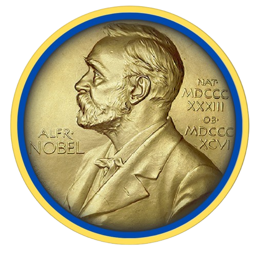
The official representation of the International Information Nobel Center in Ukraine was established in 2020. It operates as an independent legal entity - the Public Organization "International Information Nobel Centre. Official Representation in Ukraine" (EDRPOU code: 43834069).
The representation operates in accordance with:
– Ukrainian legislation
– Organization's charter
– Objectives and tasks of the International Information Nobel Center
– Agreements on cooperation with Michael Nobel - a representative of the Nobel family.
*Clarification of NamesWhen searching in the state registry, another legal entity may appear alongside the official representation - LLC "International Information Nobel Centre" (EDRPOU code: 43474227).
During the pre-war period, at the time of establishment of this structure, it included an organization from the Russian Federation. However, according to the decision of the general meeting of LLC from February 25, 2022, this participant was officially excluded from the founders, in accordance with current Ukrainian legislation. The organization does not have citizens of the Russian Federation among its participants, instead participants from different European countries are included in its composition. This is a principled position that reflects the values of open international scientific cooperation.
The official representation of the International Information Nobel Center in Ukraine aims to integrate Ukrainian science into the global intellectual space, support the Nobel movement, and develop humanitarian and scientific ideals established by Alfred Nobel.
Tasks:– Popularization of the Nobel movement
– Creating conditions for the development of Nobelistics as an interdisciplinary field of research
– Promoting achievements of Ukrainian scientists at the international level
– Implementation of international scientific and educational programs and projects.
Special attention is paid to:– Supporting young scientists and creative youth
– Preservation of scientific schools in Ukraine
– Attracting investments and grants
– Implementation of new technologies and protection of intellectual property.
Key areas of activity:– Implementation of international educational programs in the Ukrainian education system
– Promoting domestic technologies to the world markets
– Development of environmental solutions and technologies for environmental monitoring
– Development of technologies for health preservation and human potential development.
Candidate of Medical Sciences, Associate Professor, Vice-Rector, Professor of the Department of Fundamental Disciplines of European Medical University
Candidate of Legal Sciences, Expert, Project Moderator of the Official Representation
Doctor of Philosophy, Associate Professor of the Department of Fundamental Disciplines of European Medical University
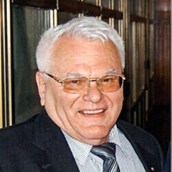
Doctor of Technical Sciences, Professor, Academician of the National Academy of Sciences of Ukraine, President of the Academy of Technological Sciences of Ukraine
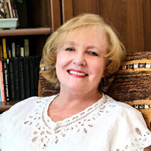
Doctor of Technical Sciences, Professor, Academician of the Asia-Pacific Academy of Materials, ARAAM
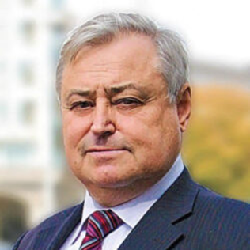
Doctor of Technical Sciences, Professor, Academician of the Academy of Engineering Sciences of Ukraine
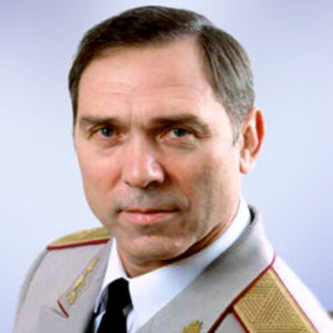
Doctor of Law, Candidate of Pedagogical Sciences, Professor, Academician of the National Academy of Pedagogical Sciences of Ukraine, Academician of the Academy of Sciences of Higher Education of Ukraine, Vice-President for Development of the Global Union of Scientists for Peace (USA)
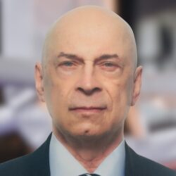
Doctor of Law, Lawyer, Journalist, President of the International Federation of Police Martial Arts
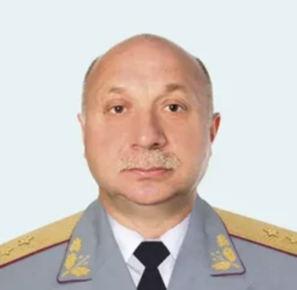
Chairman of the Public Organization "All-Ukrainian Organization "National Coordination Center for Combating Corruption"
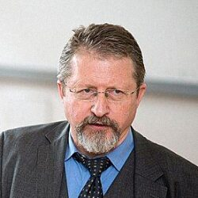
Doctor-Psychotherapist, First Minister of Defense of Lithuania, moderator of international projects in military medicine (Republic of Lithuania)
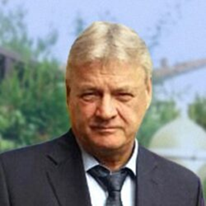
Project Moderator of the Official Representation of the International Information Nobel Center in Ukraine (Republic of Lithuania)
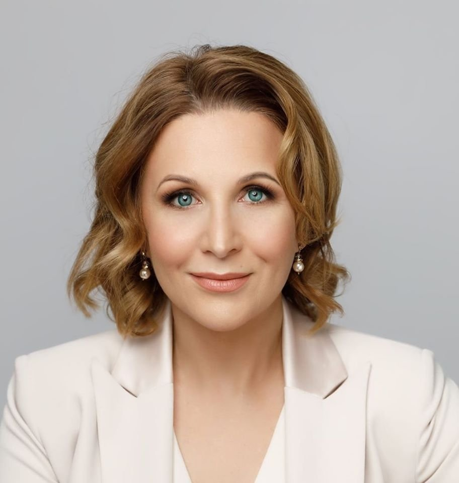
Doctor of Business Administration, Chancellor of SMK University of Applied Sciences, Scientific Consultant of the Official Representation of the International Information Nobel Center in Ukraine (Republic of Lithuania)
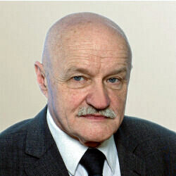
Honorary Doctor of Philosophy, Project Moderator of the Official Representation of the International Information Nobel Center in Ukraine (Republic of Latvia)
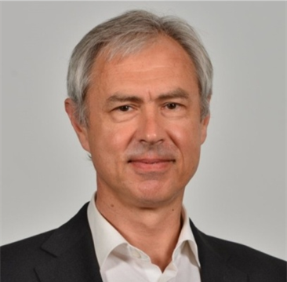
Doctor of Business Administration, Scientific Consultant of the Official Representation of the International Information Nobel Center in Ukraine (Republic of Latvia)
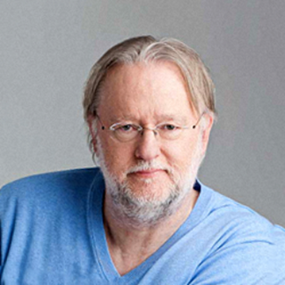
Philosopher, author, film producer, honorary professor of European Medical University, scientific consultant of the Official Representation of the International Information Nobel Center in Ukraine (Republic of Austria)
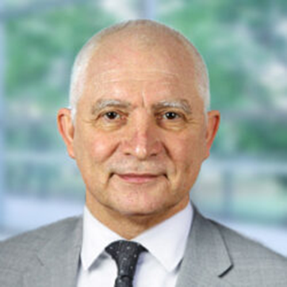
Doctor of Medical Sciences, Professor, Honorary Professor of European Medical University, President of the Academy of Holistic Medicine (Federal Republic of Germany)
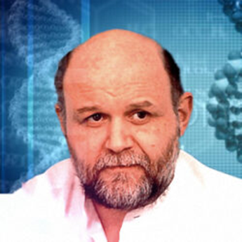
Doctor of Medical Sciences, Professor, Honorary Professor of European Medical University, Vice-President of the Academy of Holistic Medicine (Federal Republic of Germany)
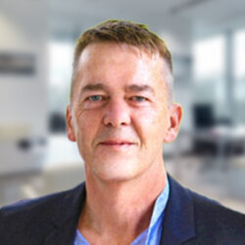
Doctor of Medical Sciences, Honorary Professor of European Medical University, Academician of the Academy of Holistic Medicine (Federal Republic of Germany)
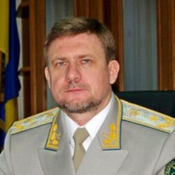
Doctor of Historical Sciences, Doctor of State Administration Sciences, Professor, Chairman of the Academic Board of the University of Customs Affairs and Finance
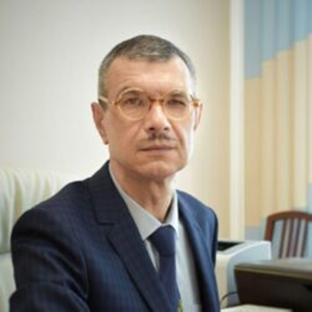
Candidate of Law, Associate Professor, Rector of the University of Customs Affairs and Finance
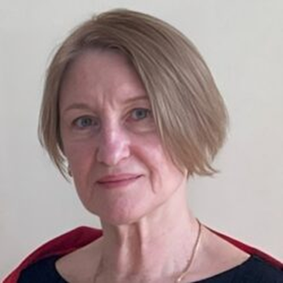
Doctor of State Administration Sciences, Professor, Professor of the Department of Public Administration and Customs Management at the University of Customs Affairs and Finance
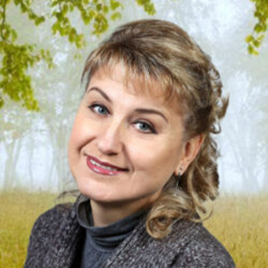
Doctor of Economic Sciences, Professor, Academician of the Academy of Economic Sciences of Ukraine, Academician of the Academy of Social Administration
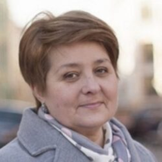
Doctor of Economic Sciences, Professor at the Institute of Economics and Forecasting of the National Academy of Sciences of Ukraine, Head of the Sector of International Financial Research in the Department of Public Finance
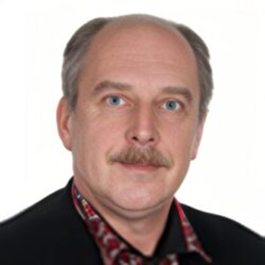
Candidate of Economic Sciences, Senior Researcher, Professor of the Department of Psychology at the International Cadre Academy
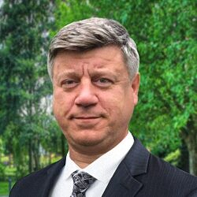
Doctor of Medical Sciences, Professor, Doctor of the Highest Category, Colonel of Medical Service Reserve, Professor of the Department of Internal Medicine at the European Medical University
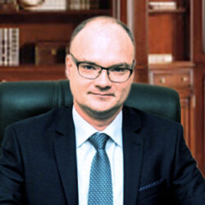
Candidate of Medical Sciences, Associate Professor, Rector of the European Medical University
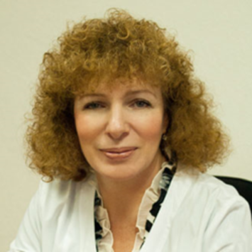
Doctor of Medical Sciences, Professor, Doctor-Psychiatrist of the Highest Category, General Director of the State Enterprise "Dnipro Psychiatric Hospital"
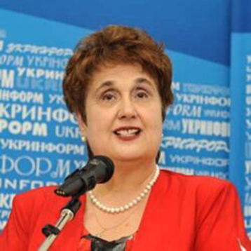
Doctor of Medical Sciences, Professor, Academician of the Academy of Sciences of Higher Education of Ukraine, Chief Editor of the Journal "Phytotherapy", President of the National Association of Experts in Traditional and Alternative Medicine of Ukraine
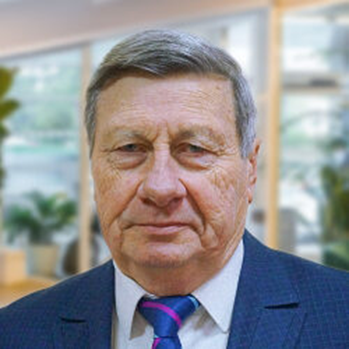
Doctor of Medical Sciences, Professor, Director of the State Enterprise "Ukrainian Research Institute of Transport Medicine" of the Ministry of Health of Ukraine
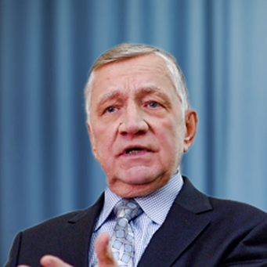
Doctor of Medical Sciences, Professor, Head of the Department of Rehabilitation and Alternative Medicine at the Lviv National Medical University named after Danylo Halytsky
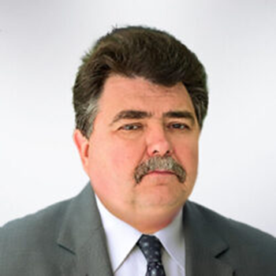
Doctor of Pharmaceutical Sciences, Professor, Head of the Department of Pharmaceutical Technology at the Zaporizhzhia State Medical and Pharmaceutical University
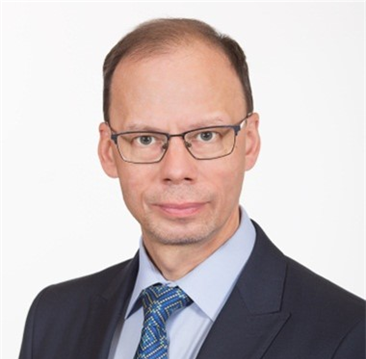
Doctor of Medical Sciences, Professor, Head of the Department of Pharmacology and Pharmacotherapy at the National Pharmaceutical University of the Ministry of Health of Ukraine
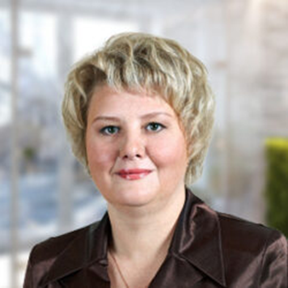
Doctor of Medical Sciences, Professor, Professor of the Department of Pharmacology and Pharmacotherapy at the National Pharmaceutical University of the Ministry of Health of Ukraine
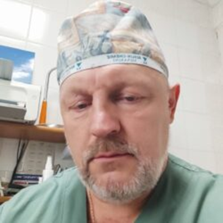
Candidate of Medical Sciences, Surgeon of the Highest Category, Colonel of Medical Service, Associate Professor of the Military Medical Academy of the Ministry of Defense of Ukraine
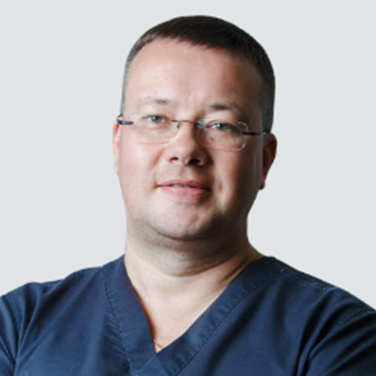
Candidate of Medical Sciences, Ophthalmologist of the Highest Category, Director of the Transcarpathian Center of Eye Microsurgery
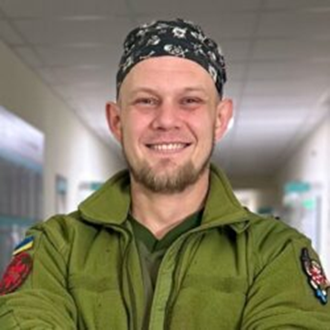
Doctor of Physical and Rehabilitation Medicine, Tactical Medicine Instructor, Combat Medic of the Armed Forces of Ukraine
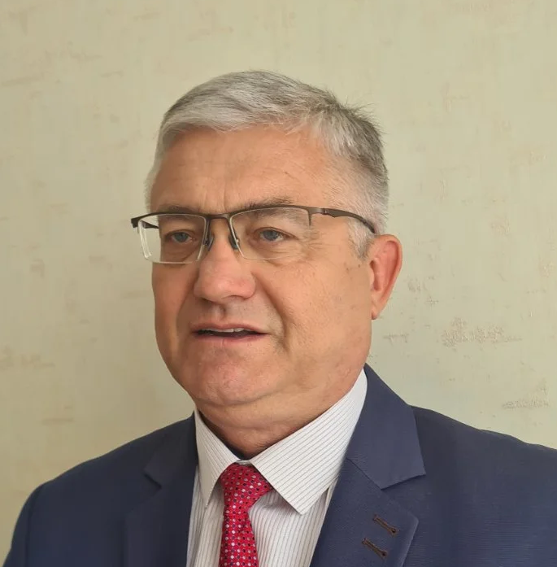
Doctor of Medical Sciences, Professor, President of the International Association for Ecology and Health (French Republic)
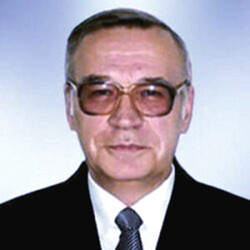
Candidate of Medical Sciences, Professor, Expert on Medical and Environmental Issues of the Zaporizhzhia City Council
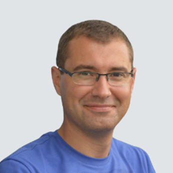
Candidate of Medical Sciences, Director of the Sports Rehabilitation Clinic
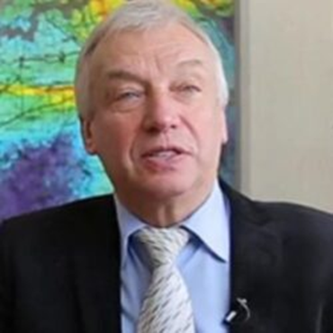
Doctor of Technical Sciences, Professor, Corresponding Member of the National Academy of Sciences of Ukraine, Director of the State Enterprise "Institute of Geochemistry of the Environment of the National Academy of Sciences of Ukraine"
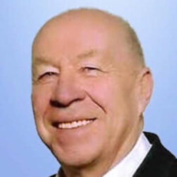
Doctor of Technical Sciences, Corresponding Member of the Academy of Engineering Sciences of Ukraine
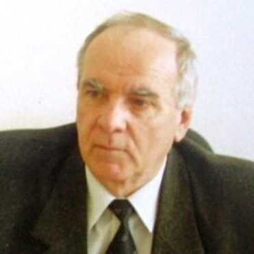
Candidate of Technical Sciences, Academician of the Academy of Technological Sciences of Ukraine, Director of the Scientific Park "Preventive Medicine and Labor Protection - Modern Systems and Technologies"
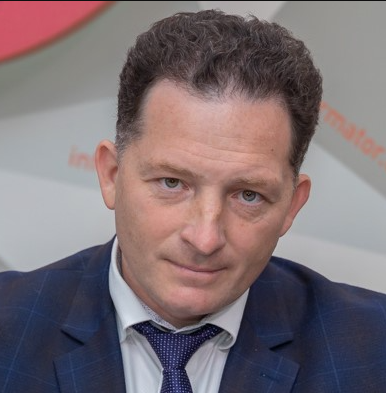
Doctor of Technical Sciences, Professor, Deputy Director of the Institute of Titanium and Zirconium of the AT "Institute of Titanium"
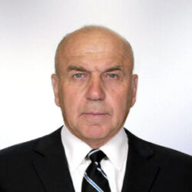
Candidate of Physical and Mathematical Sciences, Vice President of the Association of Hydrogen Energy in Ukraine
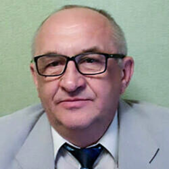
Candidate of Technical Sciences, Scientific Consultant of the Official Representation of the International Information Nobel Center in Ukraine
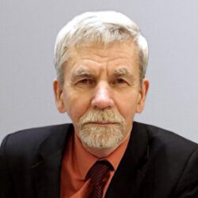
Doctor of Technical Sciences, Associate Professor, Professor of the Department of Metallurgy at the Engineering Educational and Research Institute named after Yu.M. Potyebnya of Zaporizhzhia National University
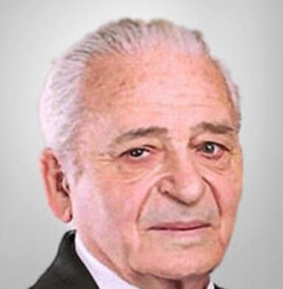
Candidate of Technical Sciences, Associate Professor of the Engineering Educational and Research Institute named after Yu.M. Potyebnya of Zaporizhzhia National University
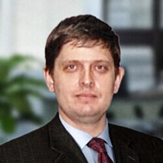
Candidate of Technical Sciences, Associate Professor of the Engineering Educational and Research Institute named after Yu.M. Potyebnya of Zaporizhzhia National University
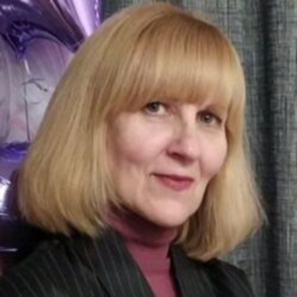
Head of the Legal Department of the Official Representation of the International Information Nobel Center in Ukraine
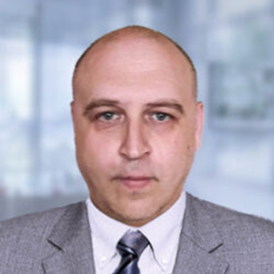
Head of the PR Department of the Official Representation of the International Information Nobel Center in Ukraine
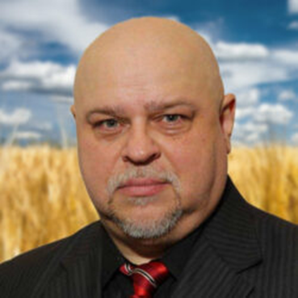
Expert of the Official Representation of the International Information Nobel Center in Ukraine, President of the Society of Scientists "Ancestral Heritage"
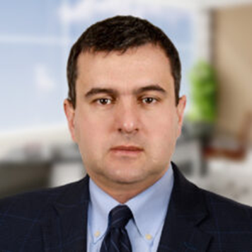
Project Moderator of the Official Representation of the International Information Nobel Center in Ukraine
Project Moderator of the Official Representation of the International Information Nobel Center in Ukraine
Expert of the Official Representation of the International Information Nobel Center in Ukraine
Expert of the Official Representation of the International Information Nobel Center in Ukraine
Expert of the Official Representation of the International Information Nobel Center in Ukraine
Expert of the Official Representation of the International Information Nobel Center in Ukraine
Legal Consultant, Project Moderator of the Official Representation of the International Information Nobel Center in Ukraine (Swiss Confederation)
Project Moderator of the Official Representation of the International Information Nobel Center in Ukraine (Republic of Kazakhstan)
Honorary Professor, General Secretary of International Human Rights Commission, Project Moderator, Scientific Consultant (Republic of Poland)
Doctor of Geological Sciences, Professor, Head of the Department of Geophysical Exploration Methods, Dnipro Polytechnic National Technical University
Chairman of the Public Organization "Ukraine - Territory of Health", Chairman of the Public Association "Humanity Movement"
Director of the Limited Liability Company “Scientific and Production Enterprise ”SLUCH"
Expert on youth policy, education, and science of the Official Representation of the International Information Nobel Center in Ukraine
Candidate of Historical Sciences, Associate Professor, Head of the Transatlantic Studies Department at the Institute of World History of the National Academy of Sciences of Ukraine
Investment Advisor, Director of Investments and GR of Isatex Invest Group
Candidate of Medical Sciences, Associate Professor, Vice President of the All-Ukrainian Public Organization “Association of Specialists in Folk and Non-Traditional Medicine of Ukraine”
Doctor of Medical Sciences, Professor, Scientific Consultant of the Official Representation of the International Information Nobel Center in Ukraine
Candidate of Medical Sciences, Associate Professor, Dean of the Faculty of Dentistry, Andalus University for Medical Sciences (Syrian Arab Republic)
Doctor of Technical Sciences, Professor, Scientific Consultant of the Official Representation of the International Information Nobel Center in Ukraine
Candidate of Technical Sciences, Doctor of Philosophy, Corresponding Member of the Academy of Engineering Sciences of Ukraine, Scientific Director of "SILIDO Alliance LLP"
Candidate of Technical Sciences, Associate Professor, Expert of the Official Representation of the International Information Nobel Center in Ukraine
Candidate of Biological Sciences, President of the International Academy of Sciences of Apitherapy and Beekeeping, President of the International Fund for the Development of Beekeeping and Apitherapy
Doctor of Technical Sciences, Academician of the Academy of Engineering Sciences of Ukraine, Member of the National Committee of Ukraine on Theoretical and Applied Mechanics, Professor of the Department of Construction Machinery at the Kyiv National University of Construction and Architecture
Doctor of Physical and Mathematical Sciences, Professor, Academician of the New York Academy of Sciences
Diploma Engineer, Expert of the Official Representation of the International Information Nobel Center in Ukraine
Dentist, Honorary Professor of European Medical University, Academician of the Academy of Holistic Medicine (Federal Republic of Germany)
Doctor of Medical Sciences, Professor, President of DAH-Matrixgesellschaft (Netherlands)
Project Moderator of the Official Representation of the International Information Nobel Center in Ukraine